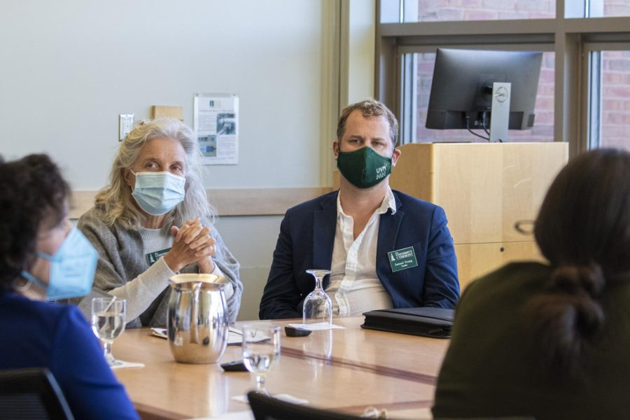

Board requests $10 million in legislative funds, stabilizing in-state tuition
The Vermont Agricultural Board meets inside the Chittenden Bank Room Oct.29. Alexandra Bodelle/THE CYNIC
The Vermont Agricultural College Board approved a request to the legislature for a $10 million increase in funds to stabilize in-state tuition rates, said Carol Ode, chair of Vermont agricultural college board.
The Board unanimously approved a request for legislative funds for a specific purpose, known as base appropriations, according to UVM FY 2019 Sourcebook. This occurred after the University lost $80 million in revenue due to three years of tuition freezes, said Richard Cate, vice president for finance and administration.
The Board requested the increased funds to continue providing in-state tuition coverage as a result of this loss, said Wendy Koenig, director of federal and state relations.
The Vermont General Assembly elected nine members to the Board, according to the UVM board of trustees website.
Koenig discussed the lack of funds UVM received in past years with The Vermont Agricultural College Board.
“UVM has not received a base appropriation increase in 14 years, so from an inflationary point of view, our base appropriation is worth less now than it was 14 years ago because of inflation,” Koenig said.
The Board also approved the request for $30 million from the American Rescue Plan Act to update heating, ventilation and air conditioning systems across campus, Koenig said.
As a final point of their agenda, the Board considered moving their annual Legislative Summit online across 14 counties instead of on UVM campus in order to increase turnout, said Shap Smith, vice chair of the Vermont Agricultural College Board.
The Legislative Summit is an annual event where Koenig plans to advertise the UVM Office of Engagement to state legislators, she said.